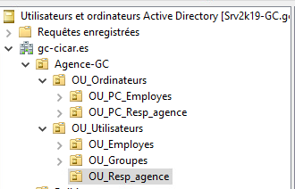
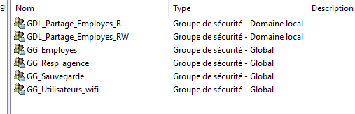
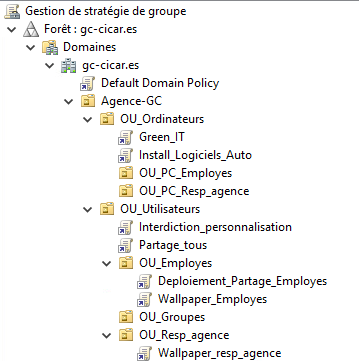
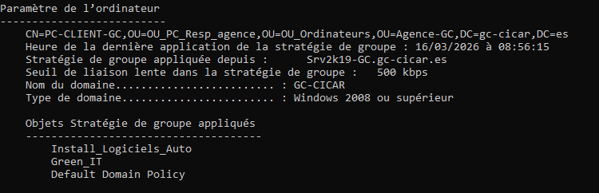
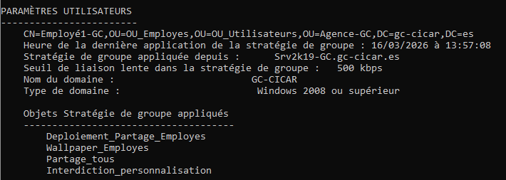
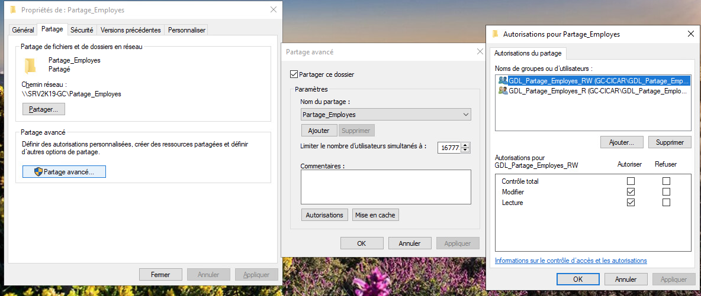

Contexte
Objectif
Mettre en place un Active Directory fonctionnel avec une structure organisationnelle (OU), des utilisateurs, des groupes, puis appliquer des stratégies de groupe (GPO) pour centraliser la gestion des postes et des droits utilisateurs.
Mission réalisée lors du projet de fin d'année de mon BTS
🎯 Compétences E4
Structure de l'Active Directory
Groupes locaux
PC fixes

Création — Active Directory
Installation du rôle AD DS
Sur Windows Server, installation du rôle Active Directory Domain Services (AD DS) via le Gestionnaire de serveur, puis promotion du serveur en contrôleur de domaine.
gc-cicar.esCréation des Unités d'Organisation (OU)
Depuis Utilisateurs et ordinateurs Active Directory (ADUC), création d'une arborescence d'OU reflétant l'organisation.
Création des utilisateurs et groupes
Création des comptes utilisateurs dans leur OU respective, puis constitution des groupes de sécurité pour faciliter la gestion des droits d'accès.

Jonction des machines au domaine
Depuis chaque poste client Windows, jonction au domaine gc-cicar.es pour centraliser l'authentification et permettre l'application des GPO.
gc-cicar.esCréation — Stratégies de Groupe (GPO)
Création et liaison des GPO
Depuis la Console de gestion des stratégies de groupe (GPMC), création des GPO et liaison à l'OU ciblée.
Interdiction_personnalisation, Deploiement_Partage_Employes…
GPO appliquées
Principales stratégies de groupe mises en place dans le cadre de cette mission :
| Nom GPO | OU cible | Paramètre configuré |
|---|---|---|
| Green-IT | OU_Ordinateurs | Extinction des pc à 00h tous les jours. |
| Install_Logiciels_Auto | OU_Ordinateurs | Installation automatique des logiciels de base. |
| Interdiction_personnalisation | OU_Utilisateurs | Interdiction de personnaliser le fond d'écran. |
| Deploiement_Partage_Employes | OU_Employes | Deploiement du lecteurs réseaux. |
| Wallpaper_Employes | OU_Employes | Définition du fond d'écarn pour les employés. |
Vérification et application des GPO
Après modification des GPO, vérification de leur bonne application sur les postes clients.
gpupdate /force sur le poste clientgpresult /r

Gestion des droits et permissions
Partages réseau et permissions NTFS
Création de dossiers partagés sur le serveur de fichiers avec des permissions définies par groupes de sécurité AD.
\\SRV2K19-GC\Partage_Employes — accessible uniquement par GG_Employes